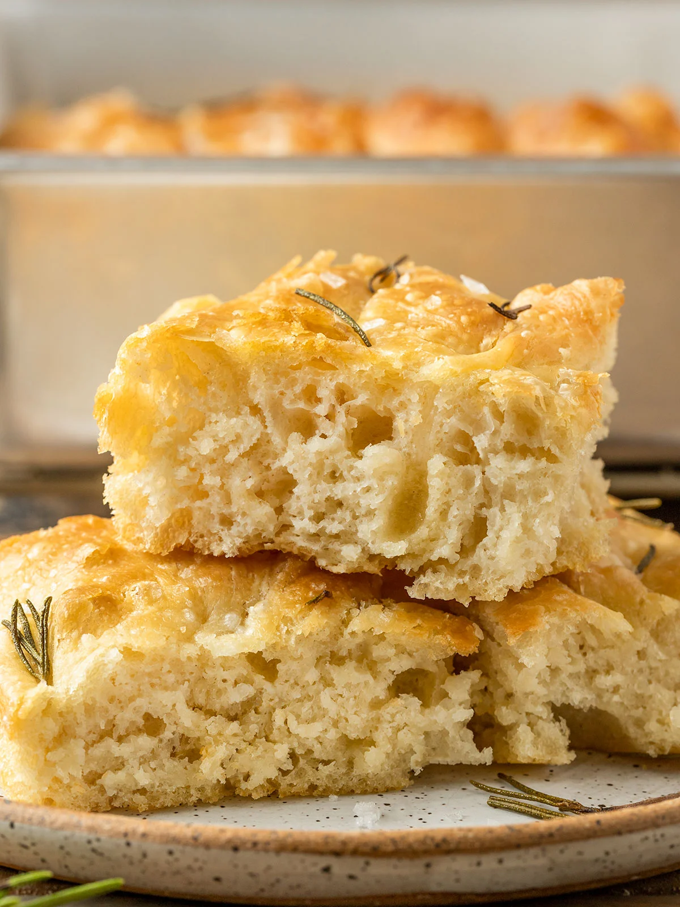

Foccacia Bread

Easy Bread Recipe
Shockingly Easy No-Knead Focaccia
Ingredients
- 1 ¼-oz. envelope active dry yeast (about 2¼ tsp.)
- 2 tsp. honey
- 5 cups (625 g) all-purpose flour
- 5 tsp. Diamond Crystal or 1 Tbsp. Morton kosher salt
- 6 Tbsp. extra-virgin olive oil, divided, plus more for hands
- 4 Tbsp. unsalted butter, plus more for pan
- Flaky sea salt
- 2-4 garlic cloves
Steps
-
Mix lukewarm water, sugar and the yeast in a bowl.
-
Add the flour and mix to get a homogenous dough.
-
Let it rise at room temperature for twenty four hours.
-
Oil a baking sheet and place your dough and rest for another hour.
-
Bake it at 200°C for 30-45 minutes.
Cook's note
It goes really well with confit garlic after baked.